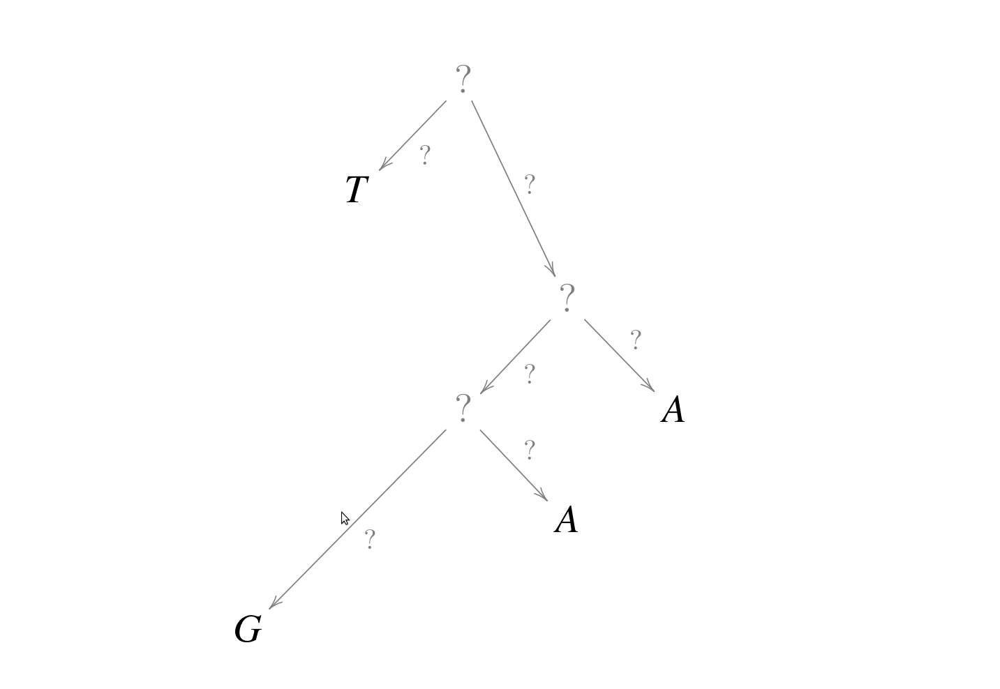
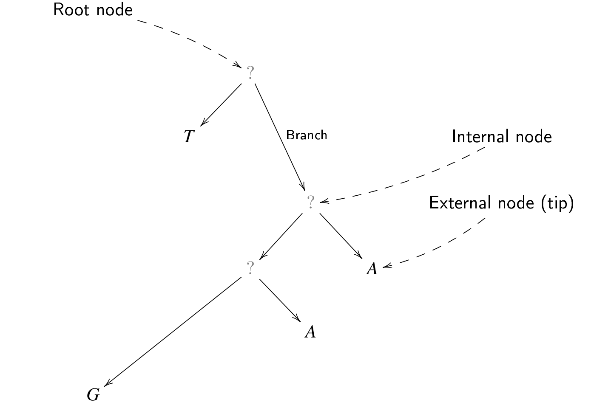
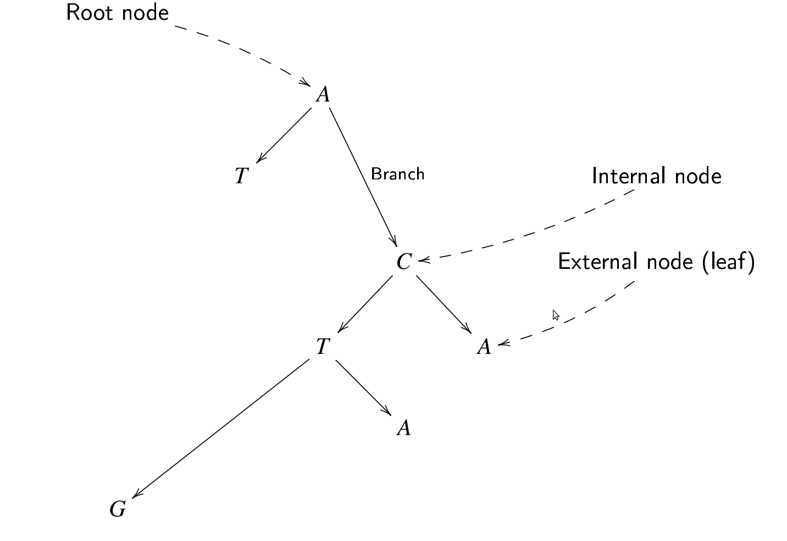
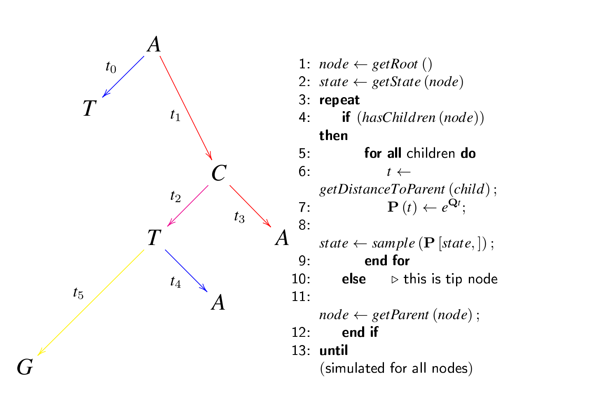
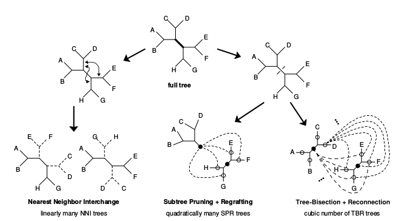

Maximum Likelihood Methods and Hypothesis Testing
in Molecular Phylogenetics
Cuban Bioinformatics Workshop on
Virus Evolution and Molecular Epidemiology
Slides for the lectures availiable at:
https://github.com/fbielejec/veme2016
Phylogenetics
Observed data
Phylogenetic tree
Mutation events generate observed data
Substitution models

- Continuous Time Markov Chain (CTMC) models describe character substitutions at particular site in the alignment.
- Characterized by $K \times K$ rate matrix $\mathbf{Q}$.
- Finite-time transition probability matrix $\mathbf{P}$ is obtained via matrix exponentiation: $P(t)=e^{Qt}=\underset{n=0}{\overset{\infty}{\sum}}Q^{n}\frac{t^{n}}{n!}$.
Fabricating evolution
Maximum likelihood inference
Some data $D$ was generated by a model with a parameter $\theta$. The conditional probability of observing the data $\mathrm{Pr}(D \, | \, \theta)$, considered as a function of $\theta$ is called the likelihood function and denoted $\mathrm{L}(\theta \, | \, D)$.
To maximize the likelihood means to find a best parameter $\hat{\theta}$ which maximizes $\mathrm{L}(\theta \, | \, D)$. Such a parameter is then called the Maximum Likelihood Estimate (MLE).
Maximum likelihood inference
Let us consider a coin with head and tail, which is flipped $10$ times, and lands on it's head $8$ times. How to model the probability of such an outcome?
Data: $D=\left(k=8,n=10\right)$.
Parameter: probability $\theta$ of landing a head.
Likelihood: given by the Binomial distribution: $$\mathrm{L}(\theta \, | \, k,n) = \left(\begin{array}{c} \begin{array}{c} n\\ k \end{array}\end{array}\right) \, \theta^k \, (1-\theta)^{n-k}.$$
Maximum likelihood inference

The likelihood curve
The MLE?
Maximum likelihood inference

${\displaystyle \log L(\theta\,|\, k,n)=\log\binom{n}{k}+x\log(\theta)+(n-k)\log(1-\theta)}$ ${\displaystyle \frac{\partial\log L(\theta\,|\,8,10)}{\partial\theta}=\frac{8}{\theta}-\frac{10-8}{1-\theta}}=0\;\Longleftrightarrow\;\theta=0.8$
Maximum likelihood inference
In phylogenetics, the data $D$ is the sequence alignment observed at the tips of the tree and the parameter $\Theta$ consists of the substitution model parameters $\theta$, the phylogenetic tree topology $\tau$ and its branch lengths $b$.
Likelihood calculation on a fixed tree
Assumptions: After divergence characters evolve independently, sites evolve independently.
Inside brackets: probability of the data $TGAA$ observed at the tips and $x_{0}x_{1}x_{2}$ for the internal nodes.
Outside brackets: sum over all possible path combinations in the state space $\mathcal{E}$.
Likelihood calculation on a tree
Ancestral reconstruction: Finding the most probable path between the unobserved conditional on the observed characters.
This means maximizing the likelihood of the data: $P(TGAA | x_0,x_1,x_2)$.
Computationaly intensive! Proceeds at $\mathcal{O}\left(K^{n-1}\right)$, where $K$ is the size of state space $\mathcal{E}$, $n$ is the number of internal nodes.
Likelihood calculation on a tree
Tree pruning [Felsenstein 1981]: recursive algorithm for calculating likelihood of a (observed) sequence on a tree.
Partial likelihood $L_{i}(x_{i})$ of observing data at the descendants of node $i$ given state $x_{i}$ at node $i$ expressed in terms of partial likelihoods at nodes $j$ and $k$.
Proceeds at $\mathcal{O}\left(K^{2} \times n \right)$.
What if the tree is not known?
Searching through tree space

Finding the tree that maximizes the likelihood of observing tip sequence requires a search through the space of all possible tree topologies and branch lengths.
Searching through tree space
Branch lengths $b$ can computed numerically by maximizing the log-likelihood of the whole alignment $X$, which is a sum of the log-likelihoods at the particular sites: $l(b | X,\tau)=\underset{j=1}{\overset{l}{\sum}}log\left(L(b | \mathbf{x}_{j},\tau)\right)$
This means finding those branch lengths for tree $\tau$ which maximize the log-likelihood of observing the data $X$.
Accomplished by numerical routines like Newton-Raphson.
Newton-Raphson (one dimension)
Let's apply the Newton Raphson method to find the parameter $\theta$ which maximizes the function: $f(\theta)=\frac{e^{\theta}}{(1+e^{\theta})^{2}}$
Method starts with a function $f$, the function's derivative $f'$ (gradient), second order derivative $f''$ (hessian) and an initial guess $\theta_{0}$ for the optimum of $f$.
At every iteration: $\theta_{n+1}=\theta_{n}-\frac{f'\left(\theta_{n}\right)}{f''\left(\theta_{n}\right)}$ until some convergence criteria is reached.
Let's see it in action!
Searching through tree space
Branch lengths can be computed numerically by maximizing the log-likelihood for a single tree. The big task that remains is to actually find the tree among all possible tree topologies that maximizes the global likelihood.
No efficient algorithms exist that guarantee to find the ML tree, even for moderately sized data sets.
Most programs resort to various heuristic approaches to suggest reasonable trees.
Heuristic searches of the tree space
Stepwise addition search
Start from unrooted tree of 3 taxa, randomly selected from $n$, reconstruct corresponding ML sub-tree.
Randomly pick one of the remaining $n-3$ taxa, insert into each branch of the ML sub-tree.
From the list of $2k-n$ trees, where $k$ is the number of added taxa, select the one which maximizes the likelihood.
Stepwise addition search
Full tree rearrangement
Generate a number of trees from a starting tree (the neighborhood of the starting tree) using three operations:
Full tree rearrangement
Nearest neighbor interchange (NNI): Visits each branch, swapping a subtree connected to one end of the branch with a subtree connected to the other end of the branch, resulting in two different topologies, compares th elikelihood to the original tree.
Full tree rearrangement
Subtree pruning and regrafting (SPR): Involves clipping off all possible subtrees from the main tree and reinserting them at all possible locations, avoiding repetitions.
Full tree rearrangement
Tree bisection and reconnection (TBR): Involves cutting a tree into two subtrees by cutting one branch, and reconnecting the two subtrees by creating a new branch that joins a branch on one subtree to a branch on the other sub-tree. All possible branches are tried, avoiding repetitions.
Assessing evolutionary trees and models
Are two evolutionary trees/models different?
We already know how given a sequence alignment data and a substitution models to reconstruct trees and compute their likelihoods.
But can we decide from the likelihood:
- Which substitution model better fits the data?
- Which reconstructed tree is better (in terms of their likelihoods)?
- Whether one tree likelihood is significantly better/worse?
These questions can be assesed by performing hypothesis tests.
Likelihood ratio test (LRT)

If two models are nested (like TN in GTR), their log-likelihood difference $2\left(l\left(\text{GTR}\right)-l\left(\text{TN}\right)\right)$ follows a $\chi^{2}$ distribution with degrees of freedom equal to the number of additional parameters ($df = 3$).
If the observed value falls into the extreme 5% interval (shaded area), we say the more complex model (GTR) is significatly better than the simpler (TN).
$H_{0}$: both models are equally good.
$H_{A}$: the more complex model is better.
Testing tree topologies
Two different topologies are not nested, thus, we cannot use the$\chi^{2}$ distribution.
Hence, bootstrap-based methods have been applied to determine the distribution of log-likelihood differences for testing.
Bootstrap - basic idea
- Compute log-likelihood values $l_{1},\ldots,l_{N}$ for tree topologies $\tau_{1},\ldots,\tau_{N}$.
- Draw bootstrap samples $i$ from the alignment, re-estimate the log-likelihood values $l_{X}^{\left(i\right)}$ for each tree $T_{x}$ and for each sample $i$.
- Center the log-likelihoods with the mean $\overline{l}_{X}^{\left(i\right)}$ by setting $\tilde{l}_{X}^{\left(i\right)}=l_{X}^{\left(i\right)}-\overline{l}_{X}^{\left(i\right)}$.
- Use the differences between the $\tilde{l}_{X}^{\left(i\right)}$ to determine the non-parametric distribution of differences: $\delta^{\left(i\right)}=\tilde{l}_{Y}^{\left(i\right)}-\tilde{l}_{Z}^{\left(i\right)}$.
- Use the distribution of $\delta^{\left(i\right)}$ to test the trees.